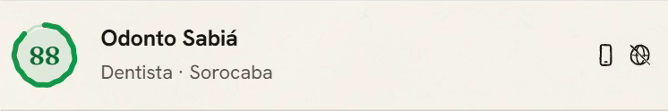
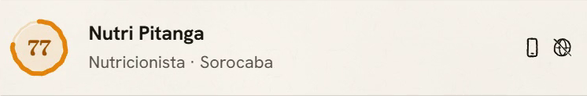
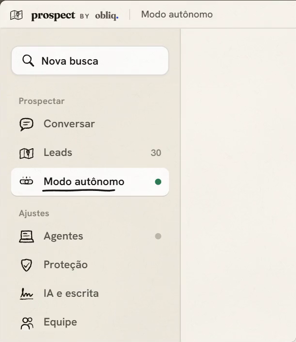
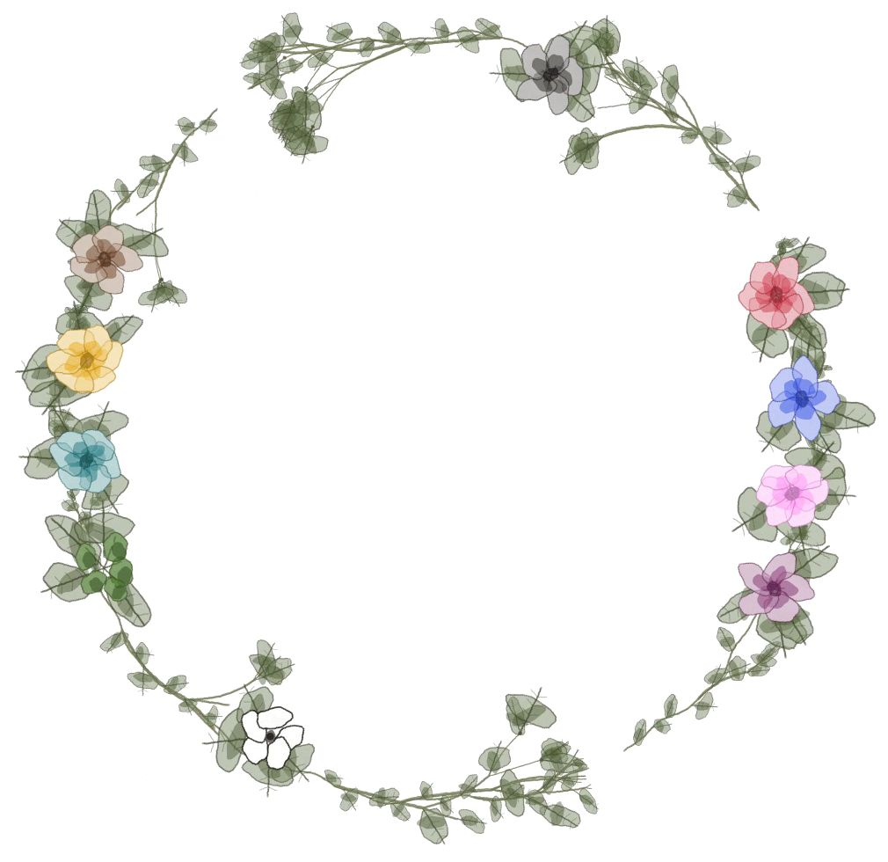

pra quem vende landing page.
você pede.
ele
prospecta.
busca os negócios, dá nota pra cada um, escreve a primeira mensagem e manda no WhatsApp.
arrasta.
- Buscando clínicas em Sorocaba
- Ligando o modo autônomo
Chamei um ajudante pra busca em Sorocaba e liguei o autônomo.
você pede em português, do seu jeito. ele chama um ajudante e liga o modo autônomo.
prospect. dados de exemplo.
dá nota pra
cada uma.
prospect. dados de exemplo.




77: abaixo da nota mínima. essa ele não chama.
primeiro
prospect. dados de exemplo.
Oi, boa tarde! É o WhatsApp da Clínica Ipê?
quando responderem
Eu faço sites para clínicas aqui de Sorocaba.
Procurei vocês no Google e não achei site,
só o endereço no mapa.
Hoje os pacientes chegam mais pelo WhatsApp mesmo?
ele escreve a abertura. o gancho fica guardado pra quando responderem.
uma por vez.
no ritmo de uma pessoa, nunca no mesmo compasso.
14:07
enviou a abertura para Fisio Aroeira (nota 86).
14:08
enviou a abertura para Clínica Jatobá (nota 84).
14:09
enviou a abertura para Estética Manacá (nota 82).
14:12
Clínica Ipê respondeu. ele mandou o gancho.
prospect, o que ele fez. dados de exemplo.
roda no seu
computador.
prospect. dados de exemplo.


fechou a janela, ele segue. e você acompanha pelo celular.
instalar é
uma linha.
o app, no PowerShell do Windows:
irm https://prospect.obliqstudios.com.br/instalar | iex
o terminal, com o comando prospect:
irm https://prospect.obliqstudios.com.br/terminal | iex
depois, entre com o seu usuário e o agente liga sozinho.
o plano
No seu computador
R$49/mês
- a IA vem incluída: até 1.000 leads por mês.
- agentes e WhatsApps no seu PC, quantos quiser.
- prefere a sua IA? use o Codex ou a sua chave.
- anual: 10× o mensal. dois meses de graça.
quer ver antes? começa no grátis.
Grátis, R$ 0
1 busca por dia, 30 mensagens da IA, envio manual.
lançamento
os 10 primeiros:
R$39/mês
pra sempre.
vale para o plano No seu computador.
em breve
o agente
na nuvem.
autônomo, 24 horas, sem depender do seu computador ligado.
- o primeiro
- grátis
- cada um a mais, com 1 WhatsApp
- + R$ 29/mês
- e pra quem vende micro-SaaS
- também

controle total das suas vendas,
com o seu agente pessoal.
testa agora, no plano grátis.
no PowerShell do Windows:
irm https://prospect.obliqstudios.com.br/instalar | iex
ou no navegador: prospect.obliqstudios.com.br